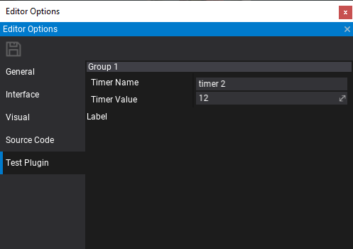

Custom Editor Options

Custom Editor Options can be used to extend the default editor options. Also, it's a very unified way for plugins to inject custom options into the editor. In this tutorial, you will learn how to define, create and use custom editor settings right in your game or an editor plugin.
To learn more about plugins see related page here.
Example code
The full source code of the implemented editor plugin with options:
public class TestPlugin : EditorPlugin
{
// The custom options key used to idenify them
public const string SettingsName = "Test Plugin";
// Custom options object that defines the data layout
[CustomEditor(typeof(CustomOptionsEditor))]
public class CustomOptions
{
[EditorOrder(0), EditorDisplay("Group 1"), Tooltip("My tooltip!")]
public string TimerName = "timer 1";
[EditorOrder(10), EditorDisplay("Group 1")]
public float TimerValue = 11.0f;
}
// Optional custom editor for the options object
public class CustomOptionsEditor : GenericEditor
{
public override void Initialize(LayoutElementsContainer layout)
{
base.Initialize(layout);
layout.Label("Label");
}
}
public override void InitializeEditor()
{
base.InitializeEditor();
// Register custom options type
Editor.Options.AddCustomSettings(SettingsName, () => new CustomOptions());
// Access editor options
var options = Editor.Options.Options.GetCustomSettings<CustomOptions>(SettingsName);
Debug.Log("Editor options: " + options.TimerName + ", " + options.TimerValue);
}
public override void Deinitialize()
{
// Cleanup on end
Editor.Options.RemoveCustomSettings(SettingsName);
base.Deinitialize();
}
}